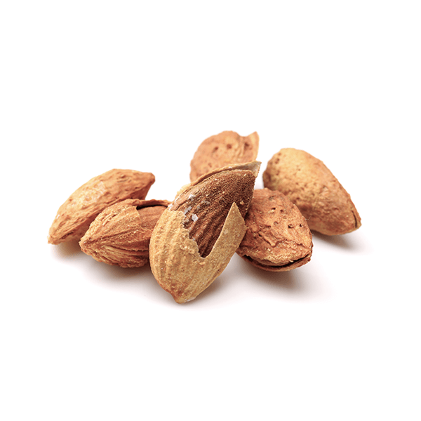
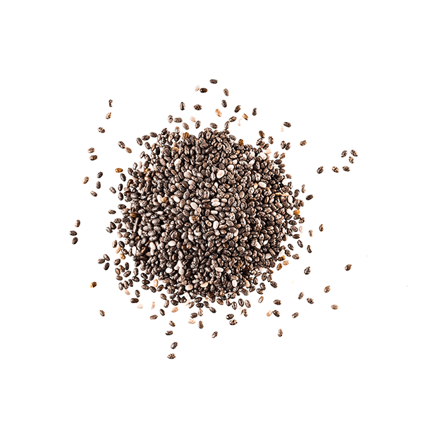
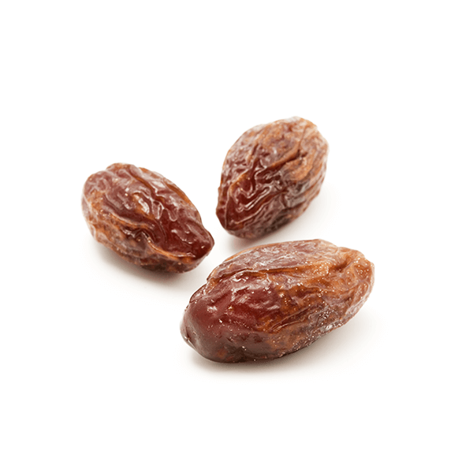
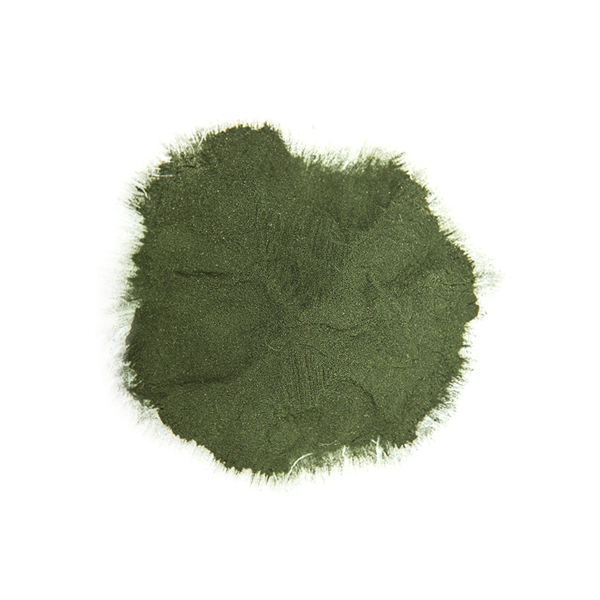
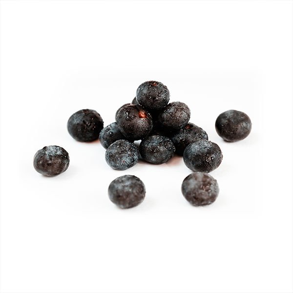
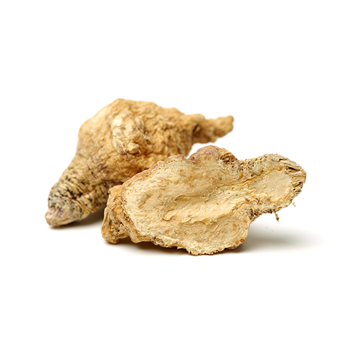
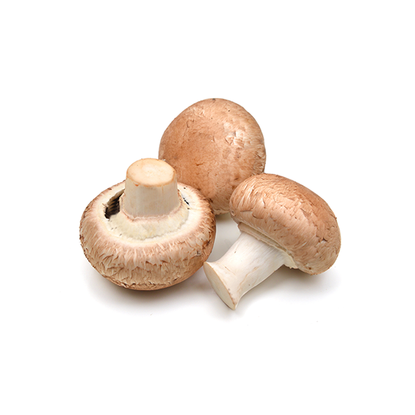

杏仁
富含人體必要的亞麻油酸不飽和脂肪酸，提供你所需的良好脂質。杏仁中的抗氧化維生素E含量極高，另擁有大量鈣、鎂、鉀等礦物質，讓你零罪惡感地大方吮指回味。
Taste it in

奇亞籽
奇亞籽同時擁有水溶性與非水溶性纖維，能促進腸道蠕動，幫助維持消化道機能。內含油脂絕大部份屬於有益身體的Omega-3不飽和脂肪酸，為極佳的脂肪來源，也是有效率的活力能量源。
Taste it in
椰棗
椰棗的成分組成幾乎都是單純的果糖，可以輕鬆轉換成身體所需的葡萄糖。內含豐富膳食纖維與多種維生素及植化素，在伊斯蘭教可蘭經當中，被稱為『神賜的食物』。
Taste it in
螺旋藻粉
螺旋藻是能自體製造氧氣的多細胞生物。除了富含豐富的鈣、鎂、鋅、銅、鐵與維生素B群，蛋白質含量更高達本身總重的60%~70%，為素食者提供優質蛋白質的補充來源。
Taste it in
巴西莓粉
『生命之果』巴西莓是生長於亞馬遜雨林中棕櫚樹的果實，之所以珍貴，源於巴西莓樹生長極慢，通常需3-4年才能結果。內含豐富的花青素與各種多酚類化合物，是近年最火紅的天然保養品。
Taste it in
瑪卡粉
瑪卡，又稱秘魯人蔘，主要生長在海拔四千米以上的高地。瑪卡含高量的鐵，蛋白質、胺基酸等55種活力營養素，讓忙碌無法在你身上留下痕跡。
Taste it in
蕈菇
低脂、好吃又可愛 - 在日本被視為『植物性食品頂峰』的蕈菇類不只是熱門的食材之一，更含有植物性蛋白與可在日光照射後自體轉換為維生素D2的麥角固醇。吃口香菇，然後去做日光浴吧！
Taste it in